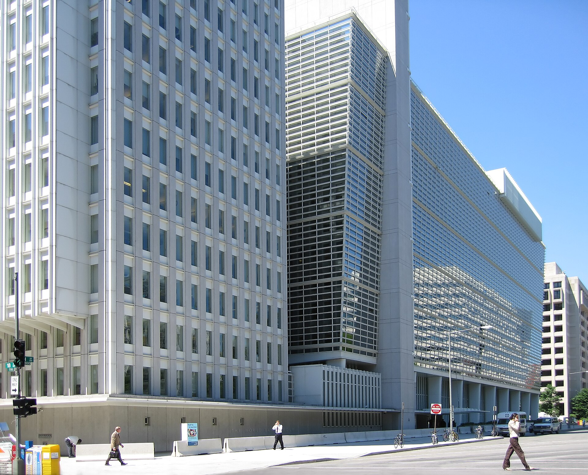

Uzbekistan's membership in the international financial institutions (1992–1995): IMF, World Bank, EBRD and the Asian Development Bank
In its first years of independence, Uzbekistan joined the global financial system: the exact accession dates to the International Monetary Fund, the World Bank Group, the European Bank for Reconstruction and Development and the Asian Development Bank, and their significance for economic integration.

Having gained independence on 31 August 1991, Uzbekistan set out on a path of transition from a planned to a market economy and of integration into the world economy. One of the most important stages of that path was joining the international financial institutions: in the short span between 1992 and 1995 the country became a member of the International Monetary Fund (IMF), the World Bank Group, the European Bank for Reconstruction and Development (EBRD) and the Asian Development Bank (ADB). Below, the exact dates of these memberships, the first forms of cooperation and their significance for the newly independent state are set out on the basis of sources.
21 September 1992: membership in the International Monetary Fund
Uzbekistan joined the International Monetary Fund (IMF) on 21 September 1992. (Source: imf.org — Republic of Uzbekistan and the IMF.) IMF membership gave the newly independent state access to technical assistance and advice in building macroeconomic stability and its monetary and currency systems. Financing instruments designed for transition economies were available through the IMF at the time. Uzbekistan later, in 2003, accepted the obligations of Article VIII of the IMF Articles of Agreement — the commitment to remove exchange restrictions on current international payments (Source: imf.org — Press Release No. 03/188, 2003).
21–24 September 1992: joining the World Bank Group
Uzbekistan became a member of the International Bank for Reconstruction and Development (IBRD — the core arm of the World Bank) on 21 September 1992. (Source: worldbank.org — Member Countries list.) Its membership date in the International Development Association (IDA) is 24 September 1992. (Source: worldbank.org — Member Countries.) The country thus gained access to credit and concessional financing through both the IBRD and the IDA.

Uzbekistan joined the remaining two arms of the World Bank Group the following year: the International Finance Corporation (IFC) on 30 September 1993, and the Multilateral Investment Guarantee Agency (MIGA) on 4 November 1993. (Source: worldbank.org — Member Countries.) The IFC is oriented toward financing the private sector and MIGA toward guaranteeing foreign investment against political risk, so these memberships served to bring the country's investment climate closer to global standards.
April 1992: the European Bank for Reconstruction and Development (EBRD)
The European Bank for Reconstruction and Development (EBRD), established in 1991, was created to support the transition to a market economy in Central and Eastern Europe and the former Soviet Union. Uzbekistan became an EBRD member in 1992. (Source: EBRD — Where we invest: Uzbekistan.) Today Uzbekistan is both a shareholder and a country of operations of the EBRD and has become the leading recipient of the bank's funding in Central Asia. The EBRD invests mainly in the private sector, infrastructure, energy and finance.
1995: membership in the Asian Development Bank
Uzbekistan joined the Asian Development Bank (ADB) in 1995. (Source: adb.org — ADB and Uzbekistan partnership, member since 1995.) As a regional development bank, the ADB provides loans, grants and technical assistance for public- and private-sector projects to countries of the Asia-Pacific region. The bank opened its resident mission in Tashkent in 1998. In the following decades the ADB became one of the major sources of financing for Uzbekistan's transport, energy, water and finance sectors.
Early cooperation and the first projects
After accession, the international financial institutions began their cooperation with Uzbekistan through technical assistance and initial financing. The IMF supported macroeconomic reforms through instruments designed for transition economies; the World Bank launched its first projects in the mid-1990s, focused on institutional reform, infrastructure and the social sectors; and the EBRD invested in developing the private sector and the financial system. Over the years this cooperation became one of the country's largest sources of external financing.
Significance: an independent state integrating into the world economy
The memberships of 1992–1995 were decisive in several respects for the newly independent, transition-era economy of Uzbekistan. First, they opened access to sources of credit and concessional financing. Second, they made it possible to obtain technical assistance and advice in monetary policy, the tax system, banking supervision and statistics. Third, these memberships turned the country into a full participant in the global financial system, enabling the transition from a planned to a market economy and its integration into the world economy. Thus, within the first four years of independence, Uzbekistan joined four of the world's principal financial institutions — the IMF, the World Bank Group, the EBRD and the ADB — reinforcing the economic foundation of its nation-building.

Sources
- IMF — Republic of Uzbekistan and the IMF (date of membership: 21 September 1992)
- IMF — Press Release No. 03/188: Uzbekistan Accepts Article VIII Obligations (2003)
- World Bank — Member Countries (IBRD 21 Sep 1992, IDA 24 Sep 1992, IFC 30 Sep 1993, MIGA 4 Nov 1993)
- EBRD — Where we invest: Uzbekistan (member and country of operations since 1992)
- ADB — ADB Supports Uzbekistan's Economic Transformation (member of ADB since 1995)
- Wikipedia — Uzbekistan and the World Bank (cross-check)